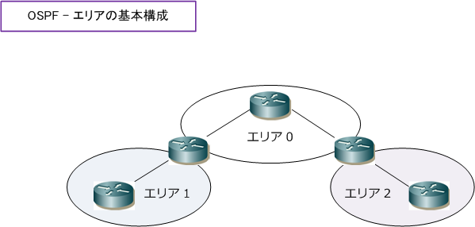
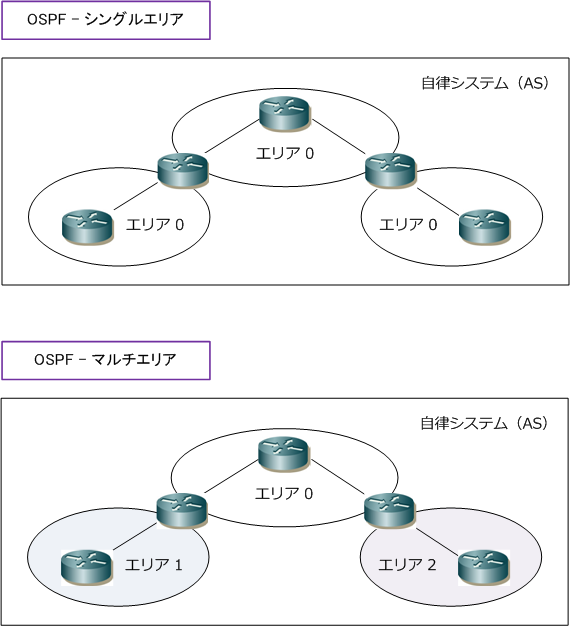
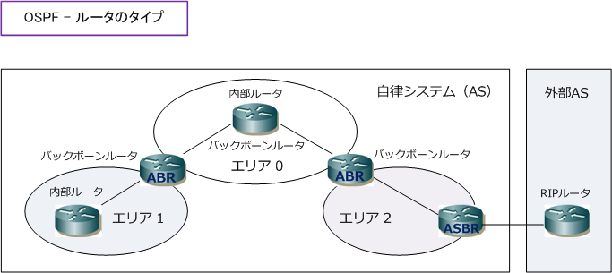
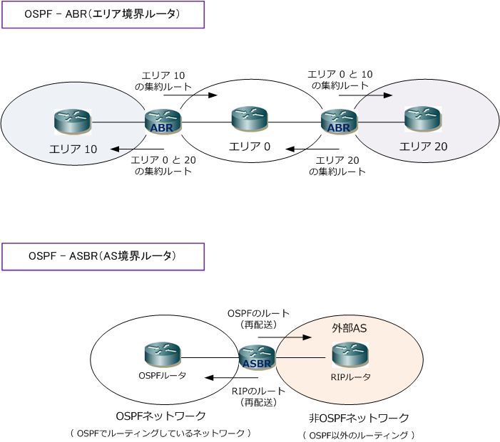

OSPF - ABR / ASBR
OSPF - エリアとは
OSPFのエリアは「LSAを交換する範囲を示す論理グループ」のことです。つまり、「同じLSDBを持つOSPF ルータの論理グループ」とも言えます。各エリア内では詳細なリンクステート情報を保持しますが、エリアの 分割により異なるエリアには集約した情報だけを通知すればよく、LSAのフラッディングを限定的にできます。 その結果、OSPFルータの負荷が軽くなります。このエリアの範囲は管理者が手動で定義することができます。

| エリア分割によるメリット | 説明 |
|---|---|
| LSDBサイズの縮小 | 同一エリア内の全てのOSPFルータは、同じLSDBを保持するが、エリア分割によって OSPFルータは異なるエリアのLSAを保持しなくなる。結果、各ルータで保持している LSDBのサイズを小さくすることができるため、ルータのメモリ使用率を抑えられる。 |
| SPF計算頻度の減少 | エリア内では詳細なリンクステート情報を保持するが、エリア分割により異なるエリア には、集約した情報だけを通知すれば良い。トポロジ変更時のLSAのフラッディングは 同一エリア内に抑えられることからSPF計算頻度も減少し、CPUの使用率を抑制できる。 |
| ルーティングテーブルのサイズ縮小 | エリアを分割することにより、異なるエリアへは複数のルート情報を経路集約して送る ことができるため、ルーティングテーブルのサイズを縮小しメモリ使用率を抑えられる。 |
OSPF - シングルエリアとマルチエリア
OSPFは自律システムとエリアで構成されます。OSPFでいう自律システムとは、共通のプロトコルを使用して 経路情報をやりとりするルータのグループのことです。OSPFのエリアは、エリア 0 (バックボーンエリア）に 他のエリアが隣接する構成となります。エリア 0 を中心とした2階層の構成となります。なお、規模が小さい ネットワークではエリア 0 だけを使用するシングルエリアとして構成しても問題はありませんが、ルータの 負荷軽減のために大規模ネットワークの場合、複数のエリアを使用するマルチエリアの構成が推奨となります。

※ OSPFのエリアの境界はルータです。ルータの各インターフェースごとに参加するエリアを指定します。
OSPF - OSPFルータのタイプ
OSPFのマルチエリアの構成では以下の4種類のタイプがあります。OSPFを稼働しているルータはいずれかの タイプに当てはまりますが1台のルータが複数のタイプに該当することもあります。例えばエリア0に配置した ルータの全てのインタフェースをエリア 0 に接続している場合、内部ルータ兼バックボーンルータとなります。

| OSPFルータのタイプ | 説明 |
|---|---|
| 内部ルータ | 内部ルータは、全てのインターフェースを同じエリアに接続しているルータ。 |
| バックボーンルータ | バックボーンルータは、1つ以上のインターフェースをバックボーンエリアに接続しているルータ。 |
| ABR ( Area Border Router) |
エリア境界ルータ。ABRは、異なるエリアを接続しているルータ。ABRではエリアごとの LSDB を 保持しており、エリア間のルーティングを行う。ABRでは異なるエリアのリンクステート情報を集約 して内部ルータに通知するので内部ルータのLSDBのサイズは縮小できる。集約ルートはABRで設定。 |
| ASBR ( AS Boundary Router ) |
AS境界ルータ。ASBRは、1つ以上のインターフェースが外部ASのルータと接続しているルータ。 外部ASのルータとは、例えばRIPを稼働しているルータなどの非OSPFネットワークにいるルータ。 ASBRにルート再配送をすることにより、OSPFネットワークと非OSPFネットワークとが通信できる。 |

実際にOSPFを使用してネットワーク設計する場合 一般的にWANをエリア0（バックボーンエリア）に 各拠点をエリア1、2、3 ・・というように割り当て していきます。そうすることで、全てのエリアは 必ずエリア 0 （バックボーンエリア）と隣接します。
また、そのネットワークセグメント設計においては 各エリアのネットワークセグメントを/24として設計 して、ABR（境界ルータ）上で /16 に経路集約して、 異なるエリアにその拠点のネットワークを通知します。